7210E28 R.R. ROOF PANEL
- Path
- Procedures > 72 PANELS AND FRAMES > 7210 REMOVING-REFITTING > 7210E EXTERNAL PARTS > 7210E28 R.R. ROOF PANEL
- Kind
- repair procedure (removal / refitting; the operation number is the code)
- Applies to
- all engines; all production periods
- Interactive page
- https://sloeber94.github.io/elrnDB/#/939004908
Applies to: all engines; all production periods
 Removing
Removing
 Refitting
Refitting- Check that the components connected are not distorted by checking the bodyshell alignment measurements using suitable equipment (gauges, templates or jigs).
- Straighten the body as necessary.

Applies to: all engines; all production periods
- Use a rotary brush to remove the paint to gain access to the spot welds.
1. Use the chamfering machine to remove the spot welds shown in the diagram.
- Use the hammer and chisel and remove the spot welds chamfered previously.
2. Grind the laser welding on both sides of the vehicle as illustrated.
- Remove the part from the vehicle.
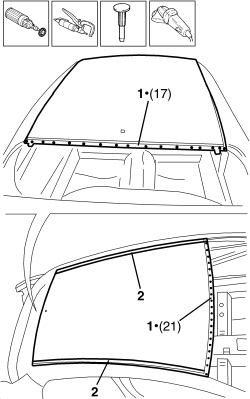
Applies to: all engines; all production periods
- Straighten the edges of the vehicle using a hammer and dolly block.
1. Remove the spot weld residues using a disc grinder.

Applies to: all engines; all production periods
1. Leave a layer of sealant on the centre ribs to provide some thickness.
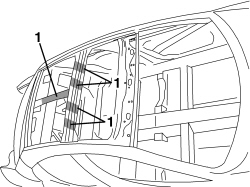
Applies to: all engines; all production periods
1. Prepare the vehicle by grinding, sanding and cleaning using a suitable solvent on the perimeter areas involved in the subsequent application of the adhesive.
Component | Type | Description | Classification | Qty. | Validity |
|---|---|---|---|---|---|
Roof | 3M Solvent | 3M 08984 | - | - |

Applies to: all engines; all production periods
Refitting
Removing1. Remove the anti-corrosion treatment from the entire perimeter of the inside and outside of the replacement part using a rotary brush.
2. Place suitable suction pads on the outer part of the replacement part that allow it to be moved.
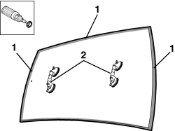
Applies to: all engines; all production periods
1. Prepare the vehicle by grinding, sanding and cleaning using a suitable solvent on the perimeter areas of the replacement part involved in the subsequent application of the adhesive.
Component | Type | Description | Classification | Qty. | Validity |
|---|---|---|---|---|---|
Roof | 3M Solvent | 3M 08984 | - | - |

Applies to: all engines; all production periods
- Prepare the adhesive cartridge following the instructions on the packaging. In order to do this, after having inserted the cartridge in the spray gun, remove the cap and check when a small amount of the product is extruded, both the basic material and the catalyzer come out of the cartridge at the same time.
- Cut the top of the nozzle until the size of the opening and consequently the seam is as desired.
- Secure the nozzle to the cartridge.
Component | Type | Description | Classification | Qty. | Validity |
|---|---|---|---|---|---|
Roof | Structural adhesive | 3M 8115 | - | - |
1. Working on the replacement part prepared previously, extrude a seam of sealant and then spread it evenly to construct an adhesion base and protection against corrosion.
2. Proceed in the same way on the vehicle remembering to extend the application a few millimetres beyond the prepared surface in order to avoid areas that are not covered.
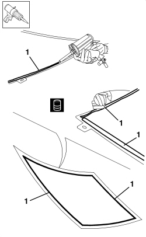

Applies to: all engines; all production periods
1. Then, working on the surfaces of the replacement part already treated, extrude a second (thinner) seam of sealant which has the function of providing some thickness.
In this case, do not spread the extruded seam.

Applies to: all engines; all production periods
1. Apply a series of sections of butyl on the vehicle ribs replacing the filler sealant removed originally during the cleaning stage. Do not remove the protective paper until the fitting to prevent the seam from becoming covered in dust which would adversely affect its adhesive properties.
Component | Type | Description | Classification | Qty. | Validity |
|---|---|---|---|---|---|
Roof | Butyl seam | 3M 08610 | - | - |

Applies to: all engines; all production periods
1. With the aid of suction pads, position the replacement part correctly on the vehicle.
- Check the alignment and the surrounding gaps.
- Using suitable self-locking clamps and belts, secure the roof to the vehicle.
- Remove the excess material that comes out from the contact surfaces as a result of the pressure of the clamps, distributing it evenly to cover any possible area of bare metal.
- The self-locking clamps can be removed 4 hours after the application (at 23°C and 50% UR). The stuck parts need to remain fixed for a longer period if the temperature is below 23°C and/or if the parts are tensioned. The polymerization time can be accelerated by heating the stuck part with a drier or lamps (do not exceed 120°C for 45 minutes).
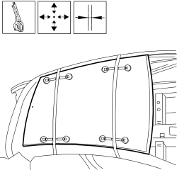
Applies to: all engines; all production periods
1. Use a spot welder in the areas shown in the diagram.
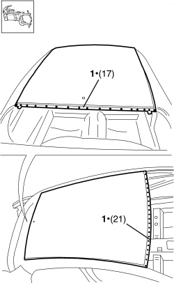
Applies to: all engines; all production periods
- Correct any distortions to the panel using a mallet and dolly block.
1. Use a disc grinder to level the welds.
- Use a rotary brush to clean the areas welded previously.

Applies to: all engines; all production periods
1. Apply anti-oxidant protection to the areas involved in the welding.
- Proceed with the painting stage.

Applies to: all engines; all production periods
Removing
Refitting- Check that connected components are not distorted by checking the bodyshell alignment measurements using suitable equipment (gauges, templates or jigs).
- Straighten the body as necessary.

Applies to: all engines; all production periods; only with equipment: Station Wagon
1. Use the circular saw following the cutting lines in the diagram.
- Use a rotary brush to remove the paint and gain access to the spot welds.
2. Use the chamfering machine to remove the spot welds shown in the diagram.
- Use the drill to chamfer the spot welds that aren't accessible to the chamfering machine.
- Use a hammer and chisel to remove the previously chamfered spot welds.
- Remove the part and the offcuts from the vehicle.
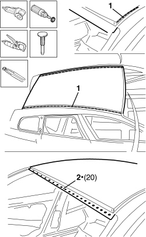
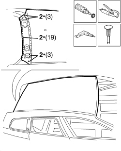
Applies to: all engines; all production periods; only with equipment: Station Wagon
- Straighten the edges of the vehicle using a hammer and dolly block.
- Remove the spot weld residues using a disc grinder.
1. Leave a layer of sealant on the centre ribs to provide some thickness.
2. Prepare the vehicle by grinding, sanding and cleaning using a suitable solvent on the perimeter areas involved in the subsequent application of the adhesive.
Component | Type | Description | Classification | Qty. | Validity |
|---|---|---|---|---|---|
Roof | 3M Solvent | 3M 08984 | - | - |
- Use a rotary brush to clean the previously treated areas.
3. Apply electro-galvanizing paint.

Applies to: all engines; all production periods; only with equipment: Station Wagon
Refitting
Removing1. Remove the anti-corrosion treatment from the entire perimeter of the inside and outside of the replacement part using a rotary brush.
2. Drill out the part at the indicated points.
3. Place suitable suction pads on the outer part of the replacement part that allow it to be moved.

Applies to: all engines; all production periods; only with equipment: Station Wagon
1. Prepare the perimeter areas of the replacement part involved in the subsequent application of adhesive by grinding, sanding and cleaning using a suitable solvent.
Component | Type | Description | Classification | Qty. | Validity |
|---|---|---|---|---|---|
Roof | 3M Solvent | 3M 08984 | - | - |
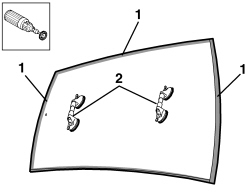
Applies to: all engines; all production periods; only with equipment: Station Wagon
- Prepare the adhesive cartridge following the instructions on the packaging. In order to do this, after having inserted the cartridge in the spray gun, remove the cap and check that when a small amount of the product is extruded, both the basic material and the catalyzer come out of the cartridge at the same time.
- Cut the top of the nozzle until the size of the opening and consequently the seam is as desired.
- Secure the nozzle to the cartridge.
Component | Type | Description | Classification | Qty. | Validity |
|---|---|---|---|---|---|
Roof | Structural adhesive | 3M 8115 | - | - |
1. Working on the previously prepared replacement part, extrude a seam of sealant and then spread it evenly to construct an adhesion base and protection against corrosion.
2. Proceed in the same way on the vehicle remembering to extend the application a few millimetres beyond the prepared surface in order to avoid leaving un-covered areas.


Applies to: all engines; all production periods; only with equipment: Station Wagon
1. Then, working on the surfaces of the replacement part that have already been treated, extrude a second (thinner) seam of sealant in order to provide some thickness.
In this case, do not spread the extruded seam.

Applies to: all engines; all production periods; only with equipment: Station Wagon
1. Apply a series of sections of butyl on the vehicle ribs to replace the filler sealant that was removed during the cleaning stage. Do not remove the protective paper until fitting to prevent the seam from becoming covered in dust which would adversely affect its adhesive properties.
Component | Type | Description | Classification | Qty. | Validity |
|---|---|---|---|---|---|
Roof | Butyl seam | 3M 08610 | - | - |
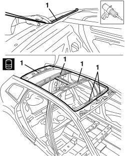
Applies to: all engines; all production periods; only with equipment: Station Wagon
1. With the aid of suction pads, position the replacement part correctly on the vehicle.
- Check the alignment and the surrounding gaps.
- Using suitable self-locking clamps and belts, secure the roof to the vehicle.
- Remove the excess material that comes out from the contact surfaces as a result of the pressure of the clamps, distributing it evenly to cover any possible areas of bare metal.
- The self-locking clamps can be removed 4 hours after application (at 23°C and 50% UR). The stuck parts need to remain fixed for a longer period if the temperature is below 23°C and/ or if the parts are tensioned. The polymerization time can be accelerated by heating the stuck part with a drier or lamps (do not exceed 120°C for 45 minutes).

Applies to: all engines; all production periods; only with equipment: Station Wagon
1. Use a spot welder to weld the areas shown in the diagram.
2. Use a MIG welder to fill weld the openings made previously.

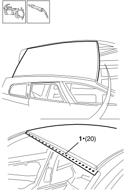
Applies to: all engines; all production periods; only with equipment: Station Wagon
- Correct any distortions to the panel using a mallet and dolly block.
1. Use a disc grinder to level the welds.
- Use a rotary brush to clean the previously welded areas.
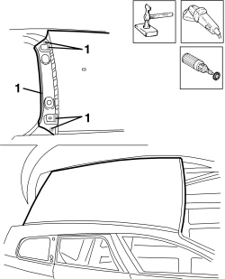

Applies to: all engines; all production periods; only with equipment: Station Wagon
1. Apply anti-oxidant protection to the areas involved in the welding.
- Proceed with the painting stage.

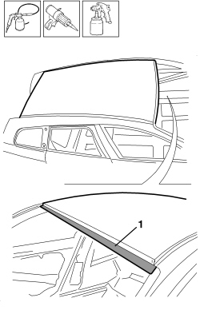
Applies to: all engines; all production periods; only with equipment: Station Wagon
Topics linked from this page (1)
Topics that link to this page (8)
- 7210B10 R.R. CENTRE PILLAR
- 7210B18 R.R. ROOF PANEL SUPPORTING CROSSMEMBER
- 7210B40 R.R. REAR INNER WHEEL ARCH
- 7210B45 R.R. REAR WING FRAME
- 7210B51 R R UPPER CHANNEL STIFFENER, (ONE) LH OR RH
- 7210B52 R.R. REAR WING LONGITUDINAL REINFORCEMENT (ONE), LEFT OR RIGHT
- 7210B65 R.R. REAR PILLAR (WING INTERIOR)
- 7210E34 R.R. ROOF PANEL/SIDE PANEL CONNECTION PROFILE-MOULDING